Сократил время оформления командировки
в 3 раза для 1 600+ сотрудников «Евросиб»
Краткая версия кейса
О компании
«Евросиб» — российская многопрофильная группа компаний в сфере логистики, железнодорожного транспорта и инфраструктурного бизнеса.
О продукте
Внутренний B2E-продукт (портал сотрудника) для сотрудников группы компаний «Евросиб». Продукт используется для отметки рабочего статуса (офис / удалёнка / командировка), отпусков и оформления командировок.
Задачи
- Сократить время и ускорить процесс оформления командировок
- Уменьшить количество ошибок и ручных действий
- Привести интерфейс портала в соответствие с дизайн-системой компании
Этапы работы
- Исследуем бизнес и пользователей
- Анализируем и формируем гипотезы
- Проектируем и оформляем интерфейс
- Тестируем и дорабатываем
- Передаём в разработку
Главная страница
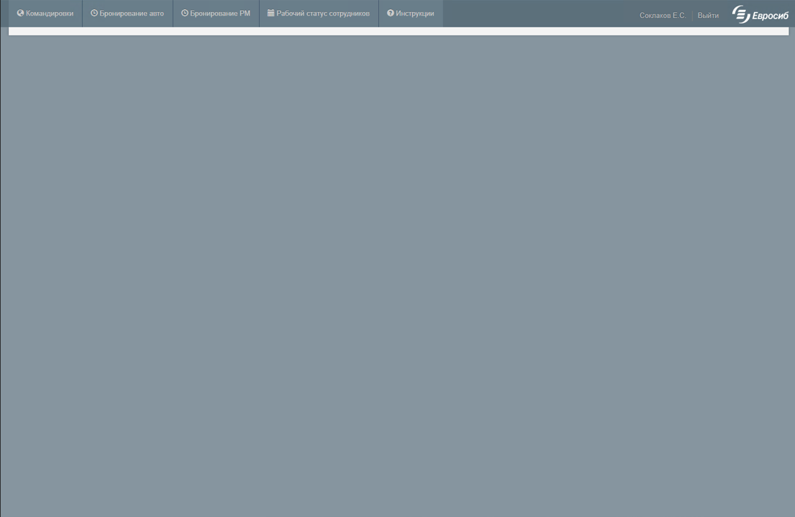
Главная была пустой, а навигация выглядела подобным образом.
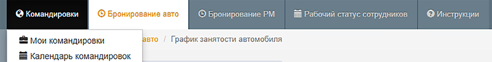
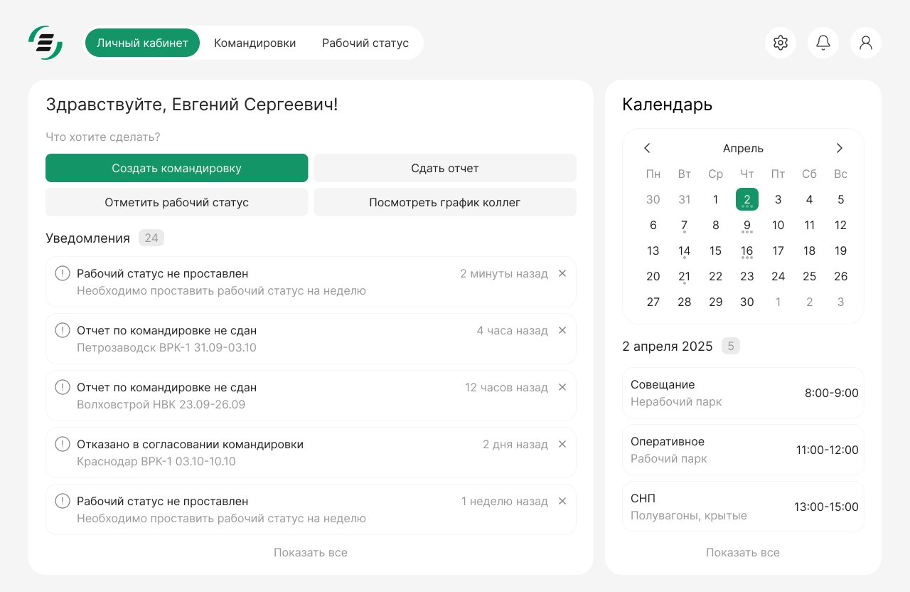
- Весь ключевой функционал — на главной
- Создание командировки и отметки рабочего статуса — в один клик
- Уведомления помогают закрывать задачи без перехода по разделам
- Календарь показывает предстоящие события и занятость
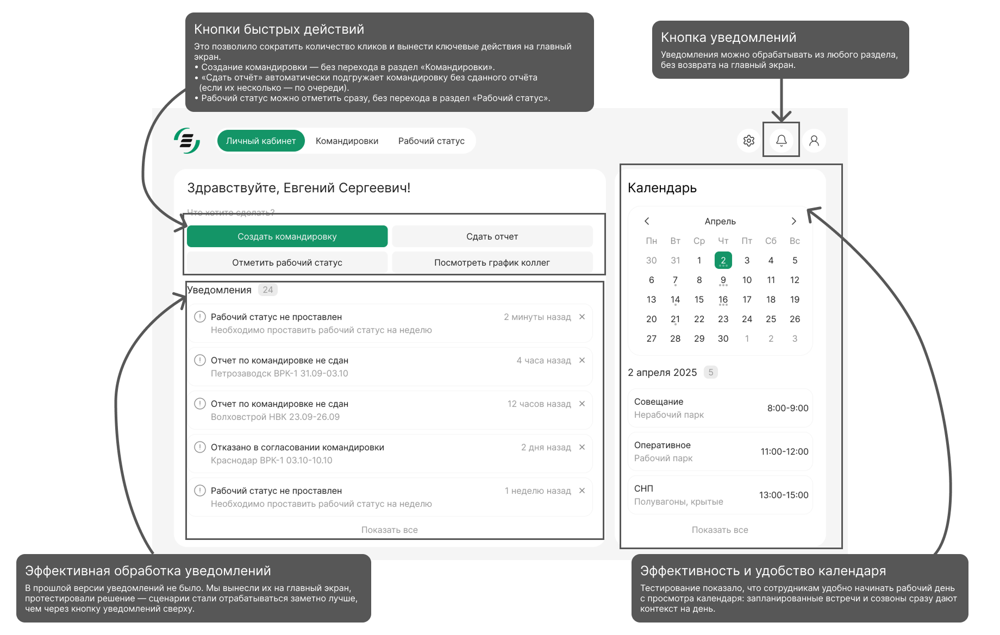
Авторизация
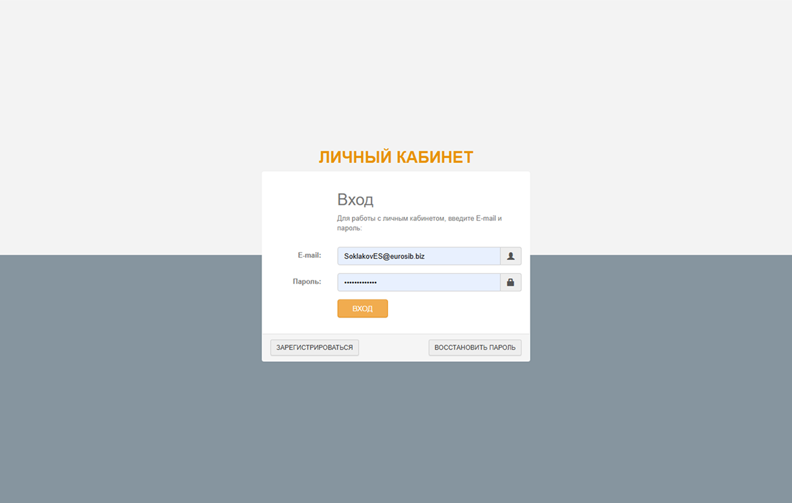
Единственный сценарий входа — логин и пароль, без альтернативных способов авторизации.
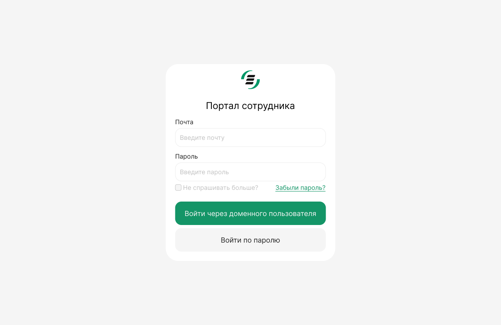
- Добавлена авторизация через домен пользователей
- Вход выполняется в один клик — аналогично решению, использованному в HR Link
- Вход по паролю сохранён как альтернативный сценарий — на случай отсутствия доступа к доменному аккаунту или удалённого подключения
Рабочий статус сотрудника
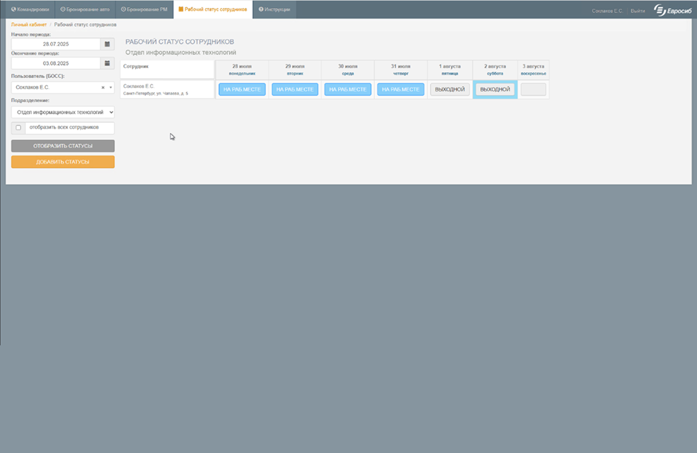
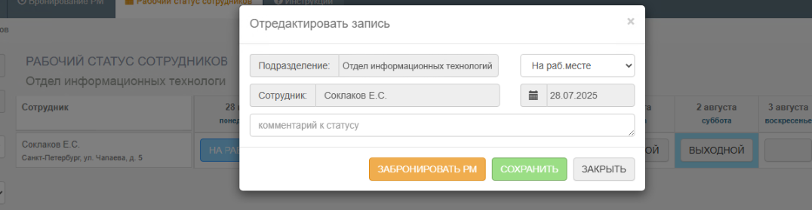
Простые действия требуют открытия модального окна, замедляя процесс и увеличивая когнитивную нагрузку.
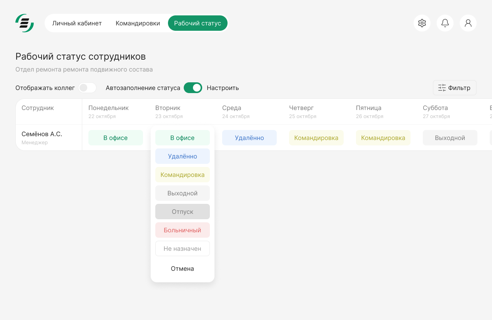
- Модальное окно заменено на дропдаун, что снижает когнитивную нагрузку и ускоряет отметку рабочего статуса
- Добавлена автоматизация статуса: настройки выполняются один раз, после чего по понедельникам приходит письмо для подтверждения. Взаимодействие с разделом сводится к минимуму.
Список командировок
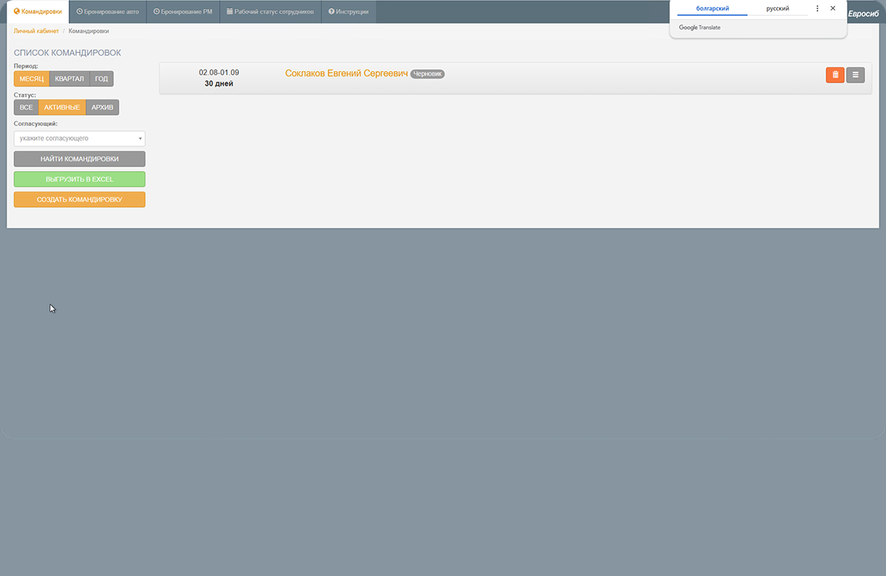
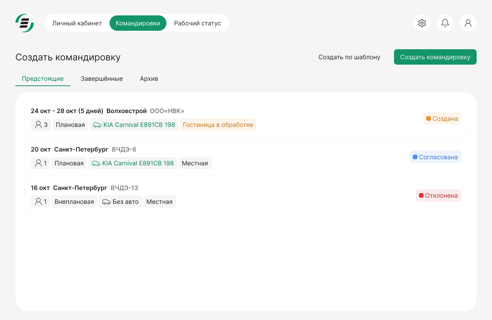
- Совместно с разработчиками оптимизировали процесс подачи заявки на командировку. Теперь заявка оформляется автоматически, без перехода в отдельную модалку
- Оптимизировали информацию по командировке: добавили тип статусов (заявка, билеты, состыковка) и индикацию количества командирующихся
Создание командировки
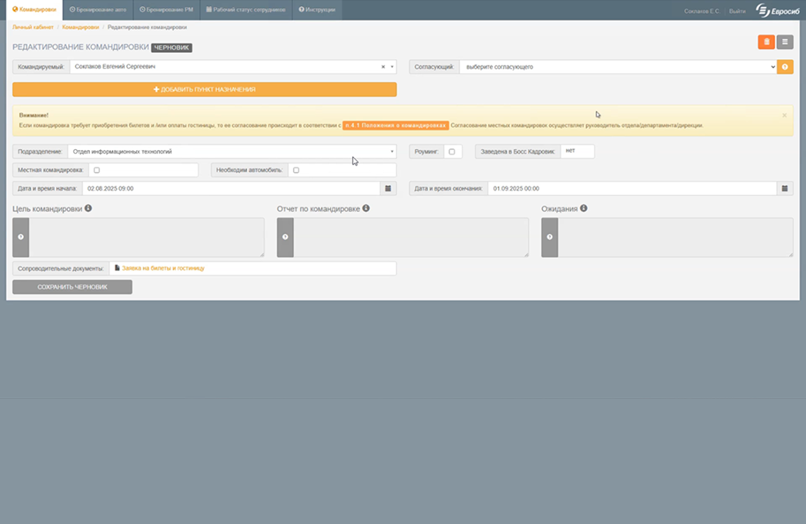
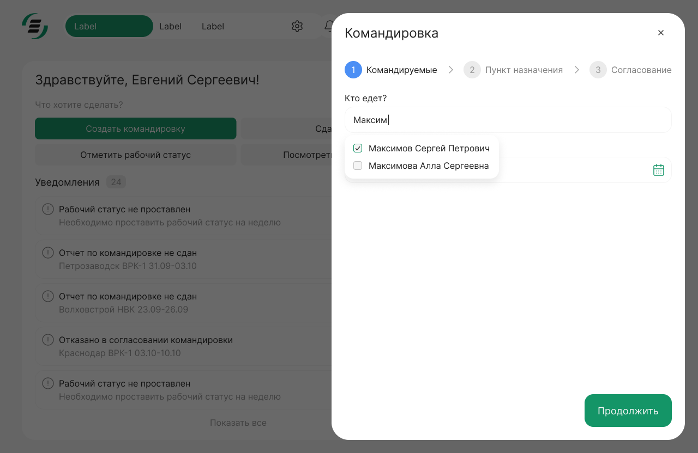
- Форма создания командировки упрощена — снижена когнитивная нагрузка и ускорено заполнение
- Добавлена возможность сохранить и заполнить позже. Это удобно для рутинных операций или работы с нескольких устройств
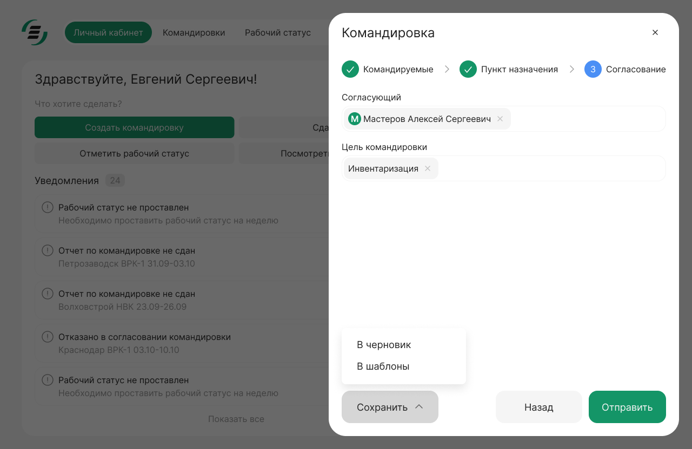
Прототипирование и тесты
Доработки
По результатам тестирования были выявлены и устранены следующие моменты:
- Добавлены пояснения к неоднозначным формулировкам в форме, что упростило заполнение
- После переделок добавлен быстрый переход к утверждению согласования и возможность назначить предложенным согласующим — для ускорения процесса
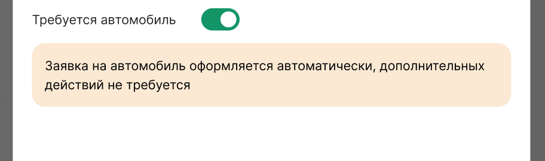
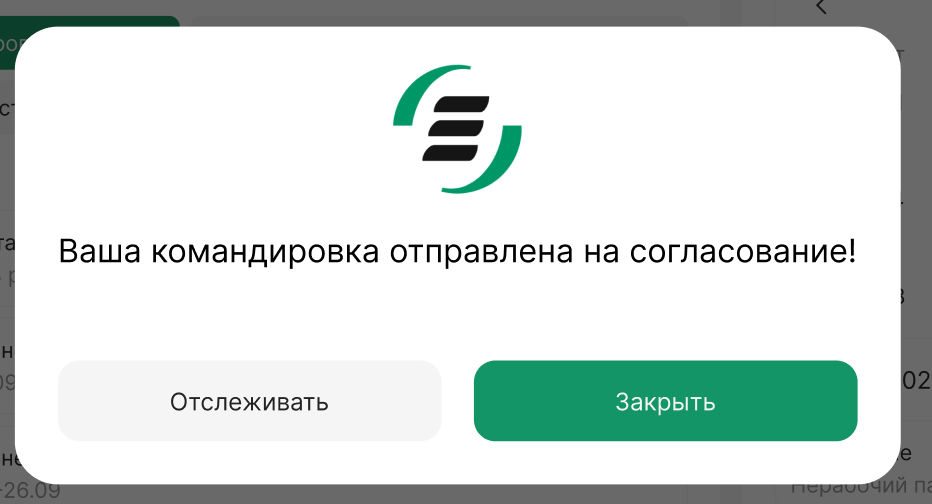
Выводы
- Ключевые проблемы портала были связаны не с визуальной частью, а с избыточными шагами и отсутствием продуманных сценариев
- Автоматизация определённых рабочих сценариев (график, автомобиль в командировке) снижает когнитивную нагрузку и количество ошибок
- Тестирование на прототипах позволило ещё до старта разработки выявить проблемные моменты и устранить их до этапа финальной реализации
- Итеративный подход и фокус на ключевых сценариях позволили сократить процесс оформления командировки и отметки рабочего статуса для активных пользователей системы
- Простые показатели — предсказуемость и скорость выполнения ключевых сценариев — повысились для сотрудников